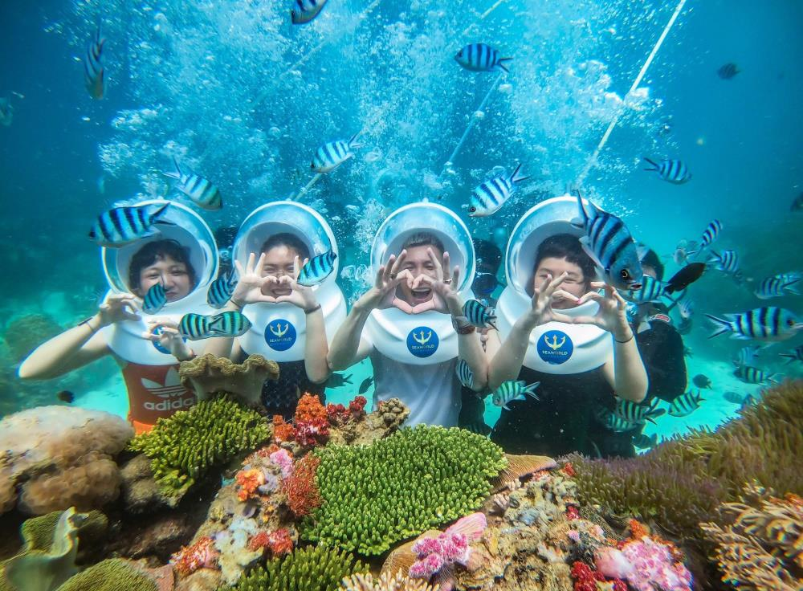
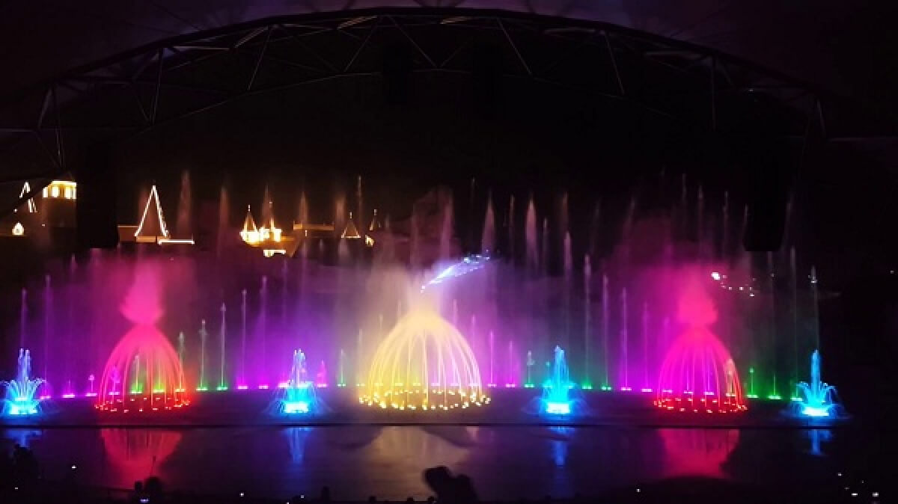
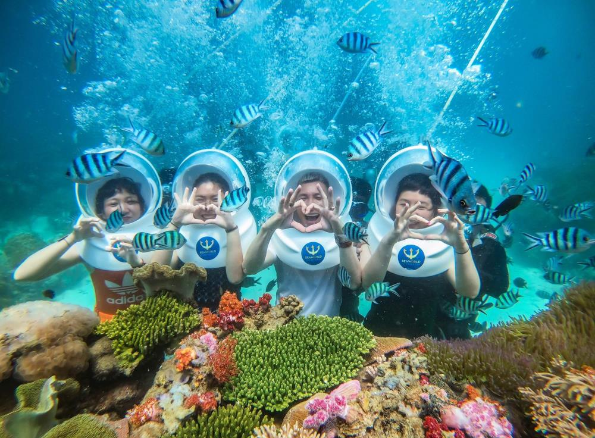
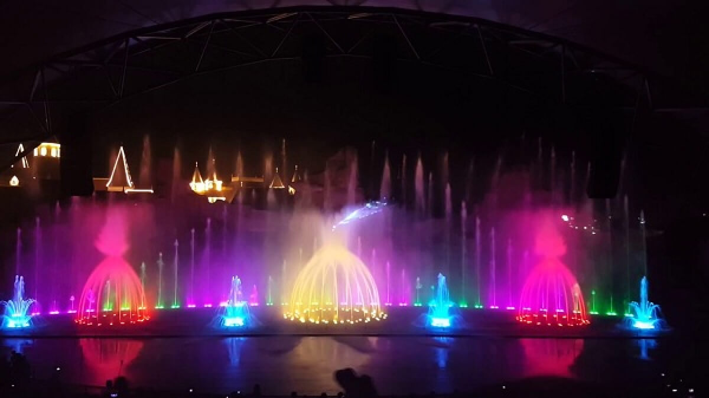

Giới thiệu
Nha Trang – thành phố biển nổi tiếng với làn nước trong xanh, bãi cát trắng mịn trải dài và khí hậu ôn hòa. Đây là điểm đến hàng đầu cho nghỉ dưỡng, khám phá biển đảo và vui chơi giải trí.
Tại Nha Trang, du khách có thể trải nghiệm lặn ngắm san hô, tham quan Hòn Mun, Hòn Tằm, tắm bùn khoáng nóng hoặc vui chơi tại các công viên giải trí hàng đầu như VinWonders Nha Trang.
Lịch trình chi tiết
• Ngày 1: Tham quan Tháp Bà Ponagar – Tắm bùn khoáng – Chợ Đầm • Ngày 2: Du ngoạn 3 đảo – Lặn biển – Hòn Mun – Hòn Tằm • Ngày 3: VinWonders Nha Trang – Show nhạc nước – Khám phá ẩm thực biển
Hình ảnh tour
 



Đặt Tour Nha Trang
Hãy để lại thông tin, chúng tôi sẽ liên hệ ngay cho bạn. Giá trọn gói chỉ 2.999k.